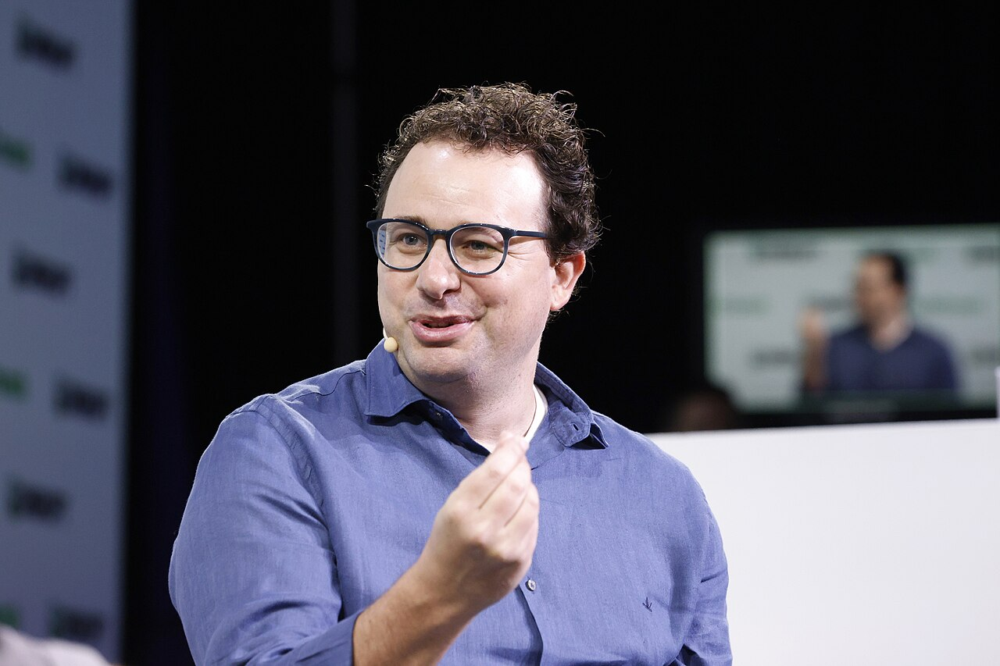

IPO Anthropic diburu investor: order sudah menutup semua saham, bankir pertimbangkan harga di atas US$78 dan valuasi US$1,5 triliun lebihInvestors chase Anthropic IPO: orders already cover all shares, bankers weigh pricing above US$78 and a valuation of US$1.5 trillion or more
Permintaan investor untuk IPO Anthropic, pembuat Claude, sudah menutup seluruh saham yang ditawarkan sejak roadshow dimulai, menurut Bloomberg News. Financial Times melaporkan bankir Anthropic menimbang menaikkan harga di atas rentang US$70-78 per saham, yang bisa membawa valuasi ke US$1,5 triliun atau lebih. Harga dijadwalkan ditetapkan 18 November dan saham mulai diperdagangkan di Nasdaq 19 November.Investor demand for the IPO of Anthropic, maker of Claude, has covered all shares on offer since the roadshow began, according to Bloomberg News. The Financial Times reported Anthropic's bankers are weighing raising the price above the US$70-78 per share range, which could take the valuation to US$1.5 trillion or more. Pricing is scheduled for 18 November and shares are set to begin trading on Nasdaq on 19 November.

Poin utamaKey points
- Bloomberg News: IPO Anthropic sudah tertutup penuh oleh order investor untuk semua saham yang tersedia saat penawaran diluncurkan.
- Financial Times (dikutip Bloomberg dan Moneycontrol): bankir yang dipimpin Goldman Sachs dan Morgan Stanley menimbang harga di atas rentang US$70-78, yang bisa mendorong valuasi ke US$1,5 triliun atau lebih.
- Di rentang yang diumumkan 10 November, Anthropic menawarkan 825 juta saham dan bisa meraih hingga US$64,35 miliar, dengan valuasi fully diluted hingga sekitar US$1,405 triliun (CNBC).
- Menurut sumber CNBC, harga ditetapkan 18 November dan perdagangan di Nasdaq (kode ANT) dimulai 19 November (waktu AS). Anthropic menargetkan alokasi ritel sekitar 20%, jauh di atas IPO biasa (5-10%).
- Tiga investor Anthropic kepada FT: perusahaan lebih mengutamakan besarnya dana yang terkumpul dibanding valuasi setinggi mungkin, karena butuh dana besar untuk infrastruktur komputasi.
- Bloomberg News: Anthropic's IPO was fully covered with investor orders for all available shares when the offering launched.
- Financial Times (cited by Bloomberg and Moneycontrol): bankers led by Goldman Sachs and Morgan Stanley are weighing a price above the US$70-78 range, which could push the valuation to US$1.5 trillion or more.
- At the range announced on 10 November, Anthropic is offering 825 million shares and could raise up to US$64.35 billion, at a fully diluted valuation of up to about US$1.405 trillion (CNBC).
- According to CNBC's sources, pricing is on 18 November and Nasdaq trading (ticker ANT) begins on 19 November (US time). Anthropic is targeting a retail allocation of about 20%, far above a typical IPO (5-10%).
- Three Anthropic investors to the FT: the company prioritizes the amount of capital raised over the highest possible valuation, because it needs large funds for computing infrastructure.
Menurut Bloomberg News, IPO Anthropic PBC sudah tertutup penuh (fully covered) oleh order calon investor untuk semua saham yang tersedia ketika penawaran diluncurkan pada awal pekan ini. CNBC, mengutip sumber yang mengetahui prosesnya, juga melaporkan buku pesanan sudah tertutup di rentang US$70-78 per saham dan permintaan institusi bahkan lebih kuat dibanding IPO SpaceX pada tahap yang sama.
Financial Times kemudian melaporkan bahwa bankir Anthropic, dipimpin Goldman Sachs dan Morgan Stanley, menimbang menaikkan harga di atas rentang yang diumumkan dalam filing Selasa (10/11). Langkah ini bisa membawa valuasi Anthropic ke US$1,5 triliun atau lebih. Menurut Moneycontrol yang mengutip FT, tiga investor Anthropic mengatakan perusahaan lebih memprioritaskan jumlah dana yang dikumpulkan dibanding valuasi tertinggi, karena butuh dana besar untuk infrastruktur komputasi.
Berdasarkan filing terbaru, Anthropic menawarkan 825 juta saham di harga US$70-78. Di batas atas, perusahaan bisa meraih hingga US$64,35 miliar dengan valuasi fully diluted hingga sekitar US$1,405 triliun, naik dari valuasi US$965 miliar pada putaran pendanaan Mei. Anthropic juga punya kesepakatan penempatan privat US$26 miliar dengan AMD, Broadcom, Google, Micron, Microsoft, Nvidia, dan TSMC di harga IPO (CNBC).
Menurut sumber CNBC, harga dijadwalkan ditetapkan pada 18 November dan saham mulai diperdagangkan di Nasdaq dengan kode "ANT" pada 19 November waktu AS. Anthropic menargetkan alokasi untuk investor ritel sekitar 20%, lebih tinggi dari IPO biasa yang umumnya 5-10%. Dalam prospektusnya, para pendiri Anthropic menulis tujuan mereka adalah "bring forth an age of miracles" (menghadirkan era keajaiban).
According to Bloomberg News, Anthropic PBC's IPO was fully covered with orders from prospective investors for all available shares when the offering launched earlier this week. CNBC, citing people familiar with the process, also reported the book was already covered at the US$70-78 per share range and that institutional demand was even stronger than for SpaceX's IPO at the same stage.
The Financial Times then reported that Anthropic's bankers, led by Goldman Sachs and Morgan Stanley, are weighing raising the price above the range announced in Tuesday's (10/11) filing. This could take Anthropic's valuation to US$1.5 trillion or more. According to Moneycontrol citing the FT, three Anthropic investors said the company is prioritizing the amount of capital raised over the highest valuation, because it needs large funds for computing infrastructure.
Based on the latest filing, Anthropic is offering 825 million shares at US$70-78. At the top end, the company could raise up to US$64.35 billion at a fully diluted valuation of up to about US$1.405 trillion, up from the US$965 billion valuation in its May funding round. Anthropic also has a US$26 billion private placement agreement with AMD, Broadcom, Google, Micron, Microsoft, Nvidia and TSMC at the IPO price (CNBC).
According to CNBC's sources, pricing is scheduled for 18 November and shares will begin trading on Nasdaq under the ticker "ANT" on 19 November US time. Anthropic is targeting an allocation for retail investors of about 20%, higher than a typical IPO's 5-10%. In the prospectus, Anthropic's founders wrote that their aim is to "bring forth an age of miracles".
Kenapa pentingWhy it matters
IPO Anthropic menjadi ujian besar selera investor terhadap saham AI di tengah suku bunga tinggi. Hasilnya bisa memengaruhi sentimen saham teknologi secara umum, yang belakangan sering bergerak searah dengan Bitcoin.Anthropic's IPO is a major test of investor appetite for AI stocks amid high interest rates. The result could affect sentiment in tech stocks in general, which lately have often moved in the same direction as Bitcoin.
Permintaan yang kuat menunjukkan minat investor terhadap AI masih besar, tetapi harga final belum ditetapkan dan laporan soal kenaikan harga berasal dari sumber anonim. Kalau harga final memang dinaikkan, sentimen "AI trade" bisa ikut terdorong, termasuk ke token bertema AI di crypto. Ini interpretasi, bukan rekomendasi saham atau token.Strong demand shows investor interest in AI is still large, but the final price has not been set and the reports of a price increase come from anonymous sources. If the final price is indeed raised, "AI trade" sentiment could get a boost, including for AI-themed tokens in crypto. This is interpretation, not a stock or token recommendation.
FotoPhotos

Foto: Dario Amodei di TechCrunch Disrupt 2023 (TechCrunch, CC BY 2.0); Nasdaq MarketSite, New York (Ajay Suresh, CC BY 2.0). Via Wikimedia Commons.Photos: Dario Amodei at TechCrunch Disrupt 2023 (TechCrunch, CC BY 2.0); Nasdaq MarketSite, New York (Ajay Suresh, CC BY 2.0). Via Wikimedia Commons.
SumberSources
- Bloomberg Law (Bloomberg News): Anthropic Bankers Look to Increase IPO Valuation, FT Reports
- Investing.com: Anthropic IPO said to draw orders to cover available shares (Bloomberg)
- Financial Times: Anthropic bankers prepare to increase IPO valuation to $1.5tn or more
- Moneycontrol: Bankers eye $1.5 trillion valuation after strong investor demand
- CNBC: Anthropic sets IPO price range of $70 to $78
Ikuti COIN BRO diFollow COIN BRO on Telegram
Dapatkan berita seperti ini lebih cepat di channel kami. Gratis.Get news like this faster on our channel. Free.
Bukan saran finansial. Artikel ini adalah informasi dan edukasi, bukan ajakan membeli atau menjual aset apa pun. Aset kripto berisiko tinggi. Fakta mengikuti sumber yang tercantum; bagian berlabel interpretasi adalah pendapat, bukan fakta. Menemukan kesalahan? Lihat kebijakan koreksi.Not financial advice. This article is information and education, not a solicitation to buy or sell any asset. Crypto assets are high risk. Facts follow the listed sources; sections labeled interpretation are opinion, not fact. Found an error? See our corrections policy.